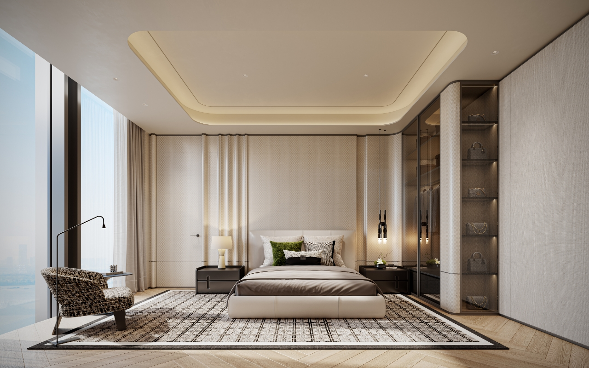

Agent 会话渲染节点 · 前端组件案例库
user_message用户消息 / 多模态输入结论类
用户侧消息，支持文本 + 附件（图片 / 文件 / 截图）多模态输入。
🤖
🖼0723.jpg
</>htmledit.html
📄原型Skill.doc
T账号管理.txt
这些是什么文件
text文本（Markdown）结论类
Markdown 富文本，支持流式增量渲染（text:delta）。承载最终回答。
🤖
核心结论：LLM API 定价三档
综合官方数据，当前主流模型按输入/输出分别计费，推理类模型溢价明显：
- 旗舰对话模型：输入约
¥0.004/千tokens - 视觉生成：按张计费，
¥0.14/张起
| 厂商 | 模型 | 输入价 |
|---|---|---|
| 阿里云百炼 | qwen-plus | ¥0.004/千 |
| OpenAI | gpt-4o-mini | $0.00015/千 |
HTML 文件里每一家都有独立分板块表格（含各分档价、缓存价、上下文窗口）、横向选型要点，以及每家可点击的官方来源链接，可直接用于你平台的供应商模型接入选型。
</>
llm_api_pricing_2026.html
↗
image_inline内嵌图片结论类
对话流中直接展示图片（生成图/配图）。点击可放大查看、旋转、打开文件夹。
🤖
这是为你生成的效果图：

点击放大 · 支持旋转 · 可打开文件夹
widget可视化挂件（svg / echarts / html）结论类
内联 SVG/HTML；标题栏操作菜单（下载到本地/下载为图片/复制代码/查看代码）；点击查看代码后渲染区切换为代码视图，菜单项变为「显示 UI」可切回渲染态；底部脚注。
🤖
tree功能结构图 / 树状图结论类
层级结构可视化：用缩进 + 线条表达父子关系，适合权限、组织架构、功能模块等场景。
🤖
超级管理员（拥有所有权限）
│
├──── 预置角色
│ ├──── IT 管理员 → 组织架构 + 安全设置
│ ├──── 应用管理员 → 应用管理 + 机器人管理
│ ├──── 部门管理员 → 本部门成员管理
│ └──── 安全管理员 → 审计日志 + 登录策略
│
└──── 自定义角色
└──── 自由组合权限项（粒度到功能模块级别）code_block代码块结论类
等宽代码 + 语言标签 + 复制按钮。
🤖
javascript
function price(input, output){
return input*0.004 + output*0.012; // 元/千tokens
}
console.log(price(10, 30));python
def price(input_tokens, output_tokens):
return input_tokens * 0.004 + output_tokens * 0.012 # 元/千tokens
print(price(10, 30))sql
SELECT model_name, input_price, output_price
FROM model_pricing
WHERE provider = 'aliyun'
ORDER BY input_price ASC;tool_callShell 工具调用过程类
shell 类（Bash / PowerShell / CMD）：标题=命令目的、小字标 shell 类型、等宽命令、底部结果行，三种 shell 共用卡片骨架，以左侧色条与标签配色区分。默认折叠，展开看入参/返回。
🤖
Initialize ppt-to-html skill skeleton
⌄
bash
/Applications/WorkBuddy.app/Contents/Resources/.../init_skill.py ppt-to-html \
--path /Users/j1hyo/workbuddy/skills/ppt-to-html
✓ 运行成功
Register WorkBuddy shell command in PATH
⌄
powershell
$p = "$env:LOCALAPPDATA\WorkBuddy\bin"
if (!(Test-Path $p)) { New-Item -ItemType Directory -Path $p | Out-Null }
Copy-Item .\workbuddy.ps1 $p\
[Environment]::SetEnvironmentVariable("Path", "$p;$env:Path", "User")
✓ 运行成功
Build Windows installer package
⌄
cmd
@echo off
set BUILD_DIR=dist\win
if not exist %BUILD_DIR% mkdir %BUILD_DIR%
xcopy /E /I assets %BUILD_DIR%\assets
powershell -Command "Compress-Archive -Path %BUILD_DIR%\* -DestinationPath setup.zip"
× 运行失败
web_search网页搜索过程类
标题栏显示 🌐 网页搜索 + query，展开为带 favicon 的可点击结果列表（两行截断、hover 下划线）。点击网页可在右侧抽屉浏览器打开。默认折叠。
🤖
🌐
网页搜索
OpenAI reasoning_effort parameter o1 o3 o4 models 2025
⌄
🌐
网页搜索
Anthropic Claude 3.7 thinking parameter reasoning effort tokens
⌄
mcp_callMCP 工具调用过程类
顶层"调用外部服务"可折叠，下方并列展示多个 MCP 调用结果，每个调用左侧带图标、标题带箭头、结果区为浅灰圆角卡片，JSON 文本区可横向/纵向滚动。默认折叠。
🤖
☎
调用外部服务
⌄
☎
Mcp Amap-maps Maps Geo
⌄
{
"type": "text",
"text": "{\n \"return\": [\n {\n \"country\": \"中国\",\n \"province\": \"浙江省\",\n \"city\": \"杭州市\",\n \"citycode\": \"0571\",\n \"district\": \"上城区\",\n \"street\": [],\n \"number\": [],\n \"adcode\": \"330102\",\n \"location\": \"120.212600,30.290851\",\n \"level\": \"门牌号\"\n }\n ]\n}"
}
☎
Mcp Amap-maps Maps Geo
⌄
{
"type": "text",
"text": "{\n \"return\": [\n {\n \"country\": \"中国\",\n \"province\": \"上海市\",\n \"city\": \"上海市\",\n \"citycode\": \"021\",\n \"district\": \"闵行区\",\n \"street\": [],\n \"number\": [],\n \"adcode\": \"310112\",\n \"location\": \"121.322861,31.194331\",\n \"level\": \"兴趣点\"\n },\n {\n \"country\": \"中国\",\n \"province\": \"上海市\",\n \"city\": \"上海市\",\n \"citycode\": \"021\",\n \"district\": \"闵行区\",\n \"street\": [],\n \"number\": [],\n \"adcode\": \"310112\",\n \"location\": \"121.320975,31.193346\",\n \"level\": \"兴趣点\"\n },\n {\n \"country\": \"中国\",\n \"province\": \"上海市\",\n \"city\": \"上海市\",\n \"citycode\": \"021\",\n \"district\": \"闵行区\",\n \"street\": [],\n \"number\": [],\n \"adcode\": \"310112\",\n \"location\": \"121.320832,31.193527\",\n \"level\": \"兴趣点\"\n },\n {\n \"country\": \"中国\",\n \"province\": \"上海市\",\n \"city\": \"上海市\",\n \"citycode\": \"021\",\n \"district\": \"闵行区\",\n \"street\": [],\n \"number\": [],\n \"adcode\": \"310112\",\n \"location\": \"121.320737,31.193573\",\n \"level\": \"兴趣点\"\n },\n {\n \"country\": \"中国\",\n \"province\": \"上海市\",\n \"city\": \"上海市\",\n \"citycode\": \"021\",\n \"district\": \"闵行区\",\n \"street\": [],\n \"number\": [],\n \"adcode\": \"310112\",\n \"location\": \"121.320717,31.193577\",\n \"level\": \"兴趣点\"\n },\n {\n \"country\": \"中国\",\n \"province\": \"上海市\",\n \"city\": \"上海市\",\n \"citycode\": \"021\",\n \"district\": \"闵行区\",\n \"street\": [],\n \"number\": [],\n \"adcode\": \"310112\",\n \"location\": \"121.320...\",\n \"level\": \"兴趣点\"\n }\n ]\n}"
}
reasoning深度思考过程类
浅灰圆角卡片，标题栏可折叠，内容区左侧竖线、灰色文字，上下渐变遮罩暗示滚动。默认折叠。
🤖
深度思考
⌄
The user is asking about message card types for an agent reply in a multi-agent system's conversation frontend. They want to know what types of message cards an agent can send back.
Let me think about this. The user is building a multi-agent system and needs to develop a conversation frontend interaction page. They want to know what types of message cards an agent can reply with.
This is a general knowledge/design question about multi-agent system UI patterns. I should provide a comprehensive answer based on common patterns in agent/AI chat interfaces.
Let me think about the common message card types in multi-agent systems.
todo_list任务清单过程类
顶部「任务列表」可收起，每项为圆角灰底行，左侧空心圆、右侧 › 可展开详情；当前项高亮。
🤖
🗒️
任务列表
⌄
✓Create main ppt2html.py conversion script›
✳Create HTML viewer templates and assets›
○Write SKILL.md documentation›
File modification文件修正过程类
支持 Git 风格行级差异，可展示 HTML / Markdown 等源码修正。
🤖
❌ 文件修正示例 ⌄
1. HTML 源码修正（严格按参考图，可点击展开/收起）
✎ 编辑
07-节点类型渲染案例.html
+31 −2
⌄
@@ -607,7 +607,7 @@
607− <div class="case-desc">标题带 ❌/⚠️；分组列出"原写→实际"修正项，支持高亮标签。默认展开（自我修正是关键结论）。</div>
607+ <div class="case-desc">标题带 ❌/⚠️；分组列出"原写→实际"修正项，支持高亮标签。默认展开（自我修正是关键结论）。 additionally 支持 Git 风格行级差异，可展示 HTML / Markdown 等源码修正。</div>
608 <div class="canvas"><div class="msg"><div class="avatar">🤖</div><div class="bubble">
609 <div class="fold open" id="diff-demo">
610 <div class="fh" onclick="toggle('diff-demo')"><span class="ic">❌</span> <b>发现并修正了阿里云百炼的三类错误</b> <span class="arr">⌄</span></div>
611+ <div class="fb"><div class="diff">
612+ <div class="dcat"><div class="ctitle">1. 万相图像（差 10 倍级）</div>
2. HTML文件修正（修正中）
3. Markdown 文案修正（严格按参考图，文件可点击查看，可展开/收起）
1−- 新增 HTML 修正示例（`07-节点类型渲染案例.html`）和 Markdown 修正示例（`README.md`）。
1+- 新增 HTML 修正示例（`07-节点类型渲染案例.html`）和 Markdown 修正示例（`README.md`）。
2+- HTML 源码修正示例严格按参考图复刻：文件头显示「✎ 编辑」+ 文件名 + `+31 -2`，点击头部可展开/收起差异体，默认展开。
4. MD 文档修正（修改中）
agent_collab子 Agent 协作（分会话页）过程类
详见原型演示页。
artifact_card产物卡片组产物/系统
横向列表式产物卡片：文件类型彩色图标 + 文件名/大小 + 右侧外链打开 + 查看全部入口。与右侧结果区同源同步（产物双入口）。
🤖
📦 本次产物
🖼
xiaokai_opened.png
↗
</>
dataviz.html
↗
📦 批量产物（2 个压缩包）
🗜
ppt-to0html.zip
↗
🗜
ppt-to1html.zip
↗
system模型切换产物/系统
会话过程中模型发生变更时的轻量提示。左右渐变分割线 + 居中文案说明模型来源与目标。
🤖
模型已从 Hy3 更改为 GLM-5.2
system上下文压缩产物/系统
上下文窗口超限时自动触发压缩。顶部显示已处理耗时，下方分割线分隔压缩进度与完成状态，图标 + 文案区分「压缩中」和「已压缩」两种态。
🤖
已处理 1m 6s
正在压缩上下文
上下文已压缩
ask提问 / 选项产物/系统（新增）
多选题或单选题卡片：顶部问题 + 分页，选项带编号和选中态，支持"其他"输入与跳过；选择选项或进入编辑态后显示提交按钮。
🤖
你的PPT文件是哪种格式？
1/2
1
.pptx 文件（Office 2007以上版本）
→
2
.ppt 文件（Office 2003及以下旧版）
→
3
已导出的PDF文件
→
4
已导出的图片合集（PNG/JPG）
→
✎ 否，请告知 OmniX 如何调整
请求许可
读取文件 /Users/zhaonan/Documents/项目资料/config.yaml？
plan执行计划（可确认）产物/系统
行动前的步骤预览，区别于 todo_list 的勾选管理，强调「确认后再执行」。
🤖
📋 我打算这样处理
1
读取两个 API 文件并解析结构
提取 path / schema / 参数
2
生成差异对比报告
分类：新增 / 变更 / 删除
3
输出 Markdown 与表格
供你评审
form表单收集产物/系统
结构化字段输入，区别于 ask 的选项式提问，用于采集自由填写信息。
🤖
system错误提示产物/系统
工具/模型调用失败时展示的错误提示条。红色背景醒目提示，左侧图标 + 错误摘要文案。
🤖
⛔
抓取 ali_pricing.json 失败：目标站点返回 403。
err任务失败提示框产物/系统
工具/模型调用失败后的提示框：标题展示错误码与摘要，正文展示错误类型/错误码/Request ID，底部支持复制错误与重试。
🤖
⚠️
400 1 validation error:
{'type': 'json_invalid', 'loc': ('body', 0), 'msg': 'JSON decode error', 'input': {}, 'ctx': {'error': 'Expecting value'}}
...
×
{'type': 'json_invalid', 'loc': ('body', 0), 'msg': 'JSON decode error', 'input': {}, 'ctx': {'error': 'Expecting value'}}
...
错误类型: 400 1 validation error: {'type': 'json_invalid', 'loc': ('body', 0), 'msg': 'JSON decode error', 'input': {}, 'ctx': {'error': 'Expecting value'}} File "/root/miniconda3/envs/Kimi/lib/python3.12/site-packages/vllm/entrypoints/serve/utils/api_utils.py", line 40, in create_chat_completion POST /v1/chat/completions [{'type': '...
错误码: custom-model-400
Request ID: fc3e8b46a6e04ef89fca64633ed33f53
system任务提示 · 桌面右下角弹窗产物/系统
当软件被最小化时，长任务完成后的桌面反馈形式：右下角浮窗，展示来源（应用名 + logo）、标题、正文。点击弹窗即可唤起并跳回软件对应页面；右上角 × 可关闭。
🤖
桌面右下角 · 长任务完成反馈

OmniX
×
任务已完成
「创作一首诗歌」已成功完成，您可以在编辑器中查看结果。
桌面右下角 · 任务失败反馈
OmniX
×
任务失败
「生成数据报表」执行失败。错误码：ERR_TIMEOUT_504；服务器响应超时，请检查网络后重试。
桌面右下角 · 等待回复
OmniX
×
等待回复
「访问外部API」需进行授权，返回页面后可点击授权按钮继续操作。
桌面右下角 · 等待回复
OmniX
×
等待回复
「生成数据报表」任务触发提问，返回页面回复确认。